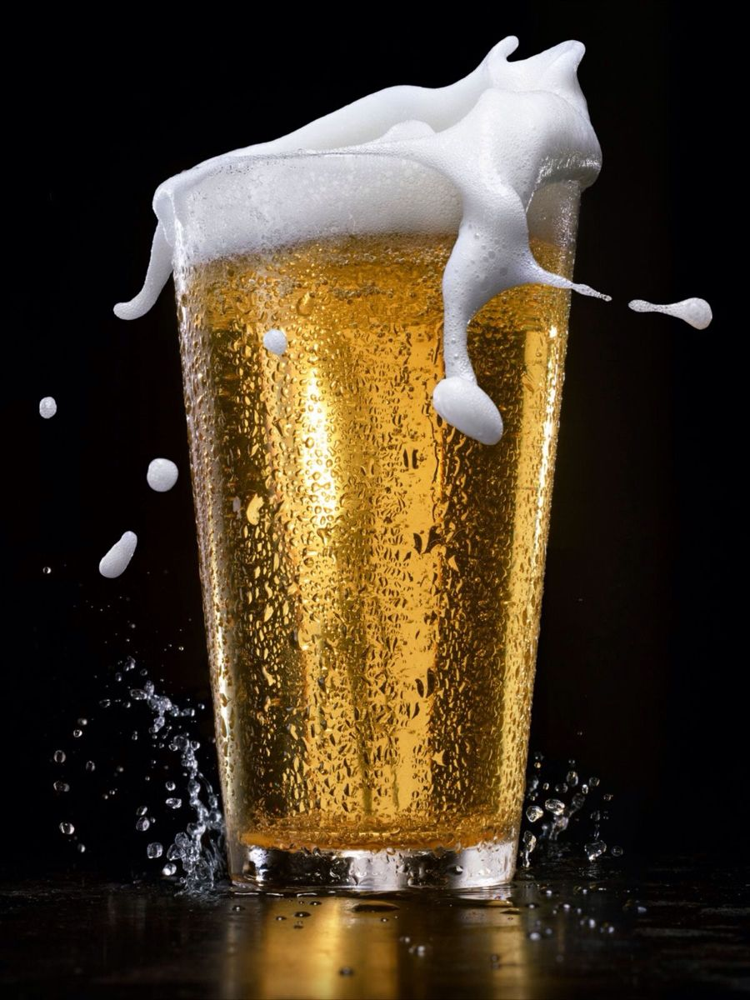

How To Make A Beer At Home ????

Making beer at home can be a rewarding hobby, but it requires careful attention to detail and adherence to
safety and legal regulations. Here's a simplified overview of how to make beer at home using the basic method I
outlined earlier. Please note that this is a beginner's guide, and the process can be more complex depending on
the beer style and equipment you use. Always prioritize safety and follow local laws and regulations regarding
homebrewing.
Ingredients:
- water: Use clean, chlorine-free water.
- Grains:Typically malted barley, but you can experiment with other grains.
- Hops:Choose hops that suit the beer style you want to brew.
- Yeast:Select a suitable yeast strain for your beer style.
Equipment:
- Large pot for boiling
- Fermentation vessel (e.g., a food-grade plastic or glass carboy)
- Airlock for the fermentation vessel
- Bottles, caps, and a capper or bottles with swing-top caps
- Thermometer
- Hydrometer for measuring specific gravity
- Sanitizing solution
- Brewing spoon
- Auto-siphon or racking cane
- Bottling wand
- Ingredients kit or individual ingredients (malt extract, hops, yeast)
The Basic Process:
- Sanitization Ensure that all your equipment, including the fermentation vessel, bottles,
and utensils, is
thoroughly sanitized to prevent contamination.
- Steeping the Grains: If you're using grains, heat water to around 150-160°F (65-71°C) and
steep the grains
in a grain bag for about 20-30 minutes. This extracts sugars and flavors.
- Boiling: Remove the grains and bring the liquid (wort) to a boil. Once boiling, add hops
according to the recipe. Boil for around 60-90 minutes, depending on the recipe.
- Cooling: Quickly cool the hot wort to a temperature suitable for fermentation, typically
between 60-72°F (15-22°C).
- Fermentation: Transfer the cooled wort to the fermentation vessel, leaving some space at
the top for foaming. Pitch (add) the yeast. Seal the vessel with an airlock, allowing carbon dioxide to
escape while preventing contaminants from entering. Place the vessel in a cool, dark place with a stable
temperature.
- Primary Fermentation: : Allow the beer to ferment for about one to two weeks, depending on
the recipe and yeast strain. The airlock will bubble as fermentation occurs.
- Secondary Fermentation (optional):Transfer the beer to a secondary vessel if desired for
further flavor development and clarification. This step is often skipped by beginners.
- Bottling:Once fermentation is complete (you'll need to measure specific gravity to be
sure), transfer the beer to bottles. Add priming sugar to carbonate the beer. Seal the bottles.
- Aging: Store the sealed bottles in a cool, dark place for at least a few weeks to allow
carbonation and flavor maturation.
- Enjoying: Chill your homebrewed beer, pour it into a glass, and savor the fruits of your
labor!
This is a simplified overview, and there are many nuances to homebrewing. It's important to follow a detailed
recipe and consider factors like water quality, temperature control, and yeast management to create great
beer. Consider starting with a beginner's homebrewing kit, which often includes all the ingredients and
instructions you need for your first batch. Additionally, consult resources like homebrewing books, online
forums, or local homebrew clubs for guidance and support.
Back